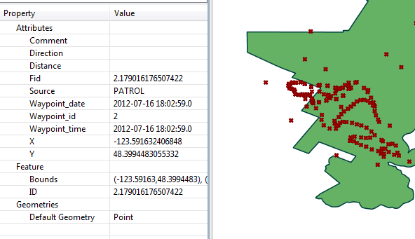

Consultas de observação de incidente são usadas para exibir detalhes de incidentes (pontos de localização) de qualquer fonte de dados (patrulhas, incidentes independentes, outros plug-ins, etc.). Além dos filtros do modelo de dados, as consultas de observação da entidade permitem que os usuários filtrem incidentes com base nas propriedades da entidade.
Tais consultas exibem os registros de incidentes que atendem aos requisitos dos filtros. Não é feito nenhum resumo (ou seja, sem totais, quantidades, agregações, etc.). A tabela resultante inclui os detalhes da localização e hora do incidente. Detalhes de observação (categorias e atributos do modelo de dados) e o que não está incluído nos resultados . Os resultados podem ser visualizados em uma tabela ou em um mapa.
 |
Exemplo de consulta de incidente com atributos de incidente |
Incidente x Observação
Uma observação é um único item observado e consiste em exatamente uma categoria do modelo de dados e todos os seus atributos associados. Um incidente é um conjunto de observações que ocorrem no mesmo ponto e na mesma hora (um ponto de referência).